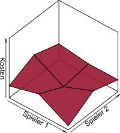
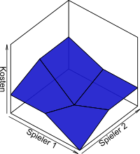
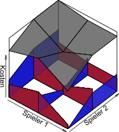

Zusammenhänge von
Auslastungsspielen und Potentialspielen
Kolloquium zur Masterarbeit
18. Mai 2017
Lukas Graf
Oberseminar zur Optimierung
Endliche (nichtkooperative) Spiele
$\Gamma = (I, X := \prod_{i\in I} X_i, (c_i)_{i\in I})$
Ein
endliches (nichtkooperatives) Spiel (in strategischer Form) ist gegeben durch
- $I$ - Spielermenge (endlich)
- $X_i$ - Strategiemenge von Spieler $i \in I$ (endlich)
Strategieprofil und Strategieprofilraum
- $c_i: X \to \mathbb{R}$ - Kostenfunktion von Spieler $i \in I$
Ein Strategieprofil $x \in X$ ist ein Nash-Gleichgewicht, wenn jeder Spieler $i \in I$ sich durch Wahl einer Alternativstrategie $\hat{x}_i \in X_i$ nicht verbessern kann, d.h. $c_i(x\mid \hat{x}_i) \geq c_i(x)$.
Ein Spiel $\Gamma$ ist ein Koordinationsspiel, wenn alle Spieler eine gemeinsame Kostenfunktion verwenden, d.h. $c_i = c_{\hat{\imath}}$ für alle Spieler $i, \hat{\imath} \in I$.
Auslastungsmodell
$M = (I, R, (S_i)_{i\in I}, (g_r)_{r \in R})$
- $I$ - Spielermenge (endl.)
- $R$ - Ressourcenmenge (endl.)
- $S_i \subseteq \mathcal{P}(R)$ - für Spieler $i$ zulässige Ressourcenwahlen
- $g_r: \mathbb{R}_{\geq 0} \to \mathbb{R}$ - Ressourcenkosten für Ressource $r$
(ungewichtetes) Auslastungsspiel
$\Gamma(M) := (I, S := \prod_{i\in I}S_i, (c_i)_{i\in I})$
- Kostenfunktion: $c_i(s) := \sum_{r \in s_i} g_r(l_r(s))$
- Lastfunktion: $l_r(s) := \#\{i \in I | r \in s_i\}$
exaktes Potential
$P: X \to \mathbb{R}$ mit
$c_i(x) - c_i(x\mid \hat{x}_i) = P(x) - P(x\mid \hat{x}_i)$
f.a. $x \in X, i \in I, \hat{x}_i \in X_i$



Morphismen von Spielen
$(\sigma, \phi): \Gamma = (I, X, (c_i)) \to \Delta = (J, Y, (d_j))$
Morphismus von Spielen (vgl.
Lapitsky'99):
- $\sigma: I \leftarrow J$ Spielerabbildung
- $\phi_j: X_{\sigma(j)} \to Y_j$ Strateegieabbildung von Spieler $j$
induziert Abbildung von Strategieprofilen: $\phi: X \to Y: x \mapsto (\phi_j(x_{\sigma(j)}))_{j \in J}$.
Verträglichkeit mit den Kostenfunktionen
$(\sigma, \phi): \Gamma \to \Delta$ Morphismus von Spielen heißt:
- kostenerhaltend, wenn f.a. $x \in X, j \in J: c_{\sigma(j)}(x) = d_j(\phi(x))$
- exakt, wenn f.a. $x \in X, j \in J, \hat{x}_{\sigma(j)}$ gilt:
$c_{\sigma(j)}(x) - c_{\sigma(j)}(x \mid \hat{x}_{\sigma(j)}) = d_j(\phi(x)) - d_j(\phi(x \mid \hat{x}_{\sigma(j)}))$
- monoton/ordinal, wenn ...
- ...
Definiere $M := (I, R, S, (g_r))$ mittels $R := R_K \cup R_D \subseteq \prod_{i \in I}\mathcal{P}(X_i)$ wobei
- $R_K := \{(\{x_i\})_{i \in I} | x_i \in X_i \}$ und
- $R_D := \{(Y_i)_{i \in I} | \exists \hat{\imath} \in I: Y_{\hat{\imath}} = X_{\hat{\imath}}, \forall i \neq \hat{\imath}: \vert X_i \setminus Y_i\vert = 1\}$
$g_r(k) :=
\begin{cases}
P(x), &r = \left(\{x_i\}\right)_{i \in I} \in R_k \text{ und } k=N \\
c_{\hat{\imath}}(x) - P(x), &r = \left(X_i\setminus\{x_i\}\right)_{i \in I\setminus\{\hat{\imath}\}} \times X_{\hat{\imath}} \in R_D, x_{\hat{\imath}} \in X_{\hat{\imath}} \text{ bel. und } k=1
\end{cases}
$
Und schließlich $S_i := \{ \{r \in R | x_i \in r_i\} | x_i \in X_i \}$.
Dann ist $(\mathrm{id}, \phi): \Gamma \to \Gamma(M)$ mit $\phi_i(x_i) := \{r \in R | x_i \in r_i\}$ ein kostenerhaltender Iso.
skaliertes
Auslastungsspiel
- $c_i(s) := \sum_{r \in s_i} f_i\big(g_r(l_r(s))\big)$
skaliertes Potential
$c_i(x) - c_i(x\mid \hat{x}_i) = f_i\big(P(x)\big) - f_i\big(P(x\mid \hat{x}_i)\big)$
mit streng monotonen $f_i: \mathbb{R} \to \mathbb{R}$.
Jedes skalierte Potentialspiel ist exakt isomorph zu einem skalierten Auslastungsspiel.
ordinales Potential
$c_i(x) \gt c_i(x\mid \hat{x}_i) \Leftrightarrow P(x) \gt P(x\mid \hat{x}_i)$